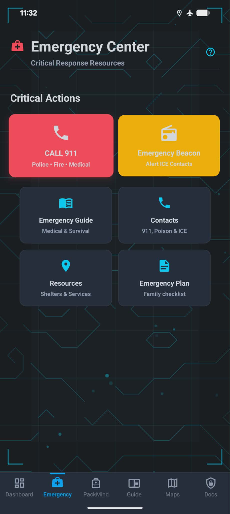
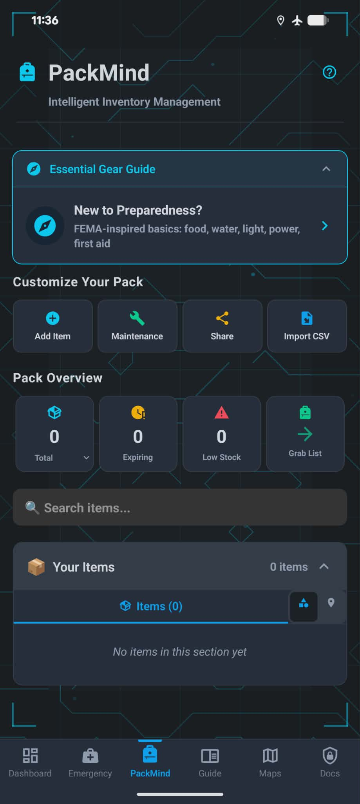
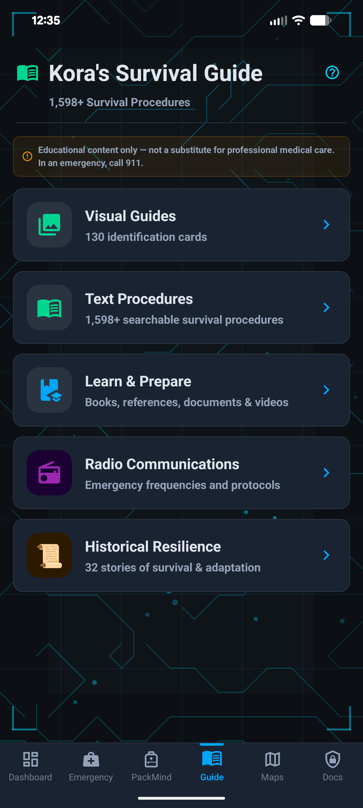
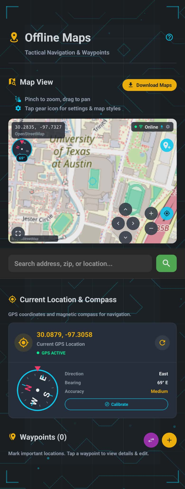
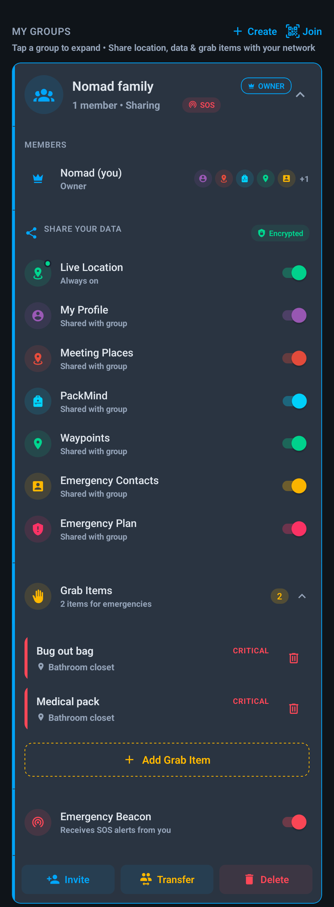

Maps that work with no cell service
Download maps for your area. Navigate with GPS, save waypoints, and find resources without cell service.
Terrain and markers here are an illustration, not a real map.
Private. Offline. No tracking. No ads.
Verified emergency procedures, supply tracking, offline maps, and family coordination. All on your device. No internet required.
You don't need to prepare for the apocalypse. You need to cover the gap between when something goes wrong and when help arrives.
Read: The 72-Hour GapFEMA's minimumEvery household should sustain itself for 3 days without outside help.
Store inventoryThe average grocery store's total stock at normal demand. Storm forecast? Hours.
Tower backupMost cell towers run on batteries that last hours, not days.
To close the gapWater, food, light, and a plan. One afternoon, under a hundred dollars.
Download maps for your area. Navigate with GPS, save waypoints, and find resources without cell service.
Terrain and markers here are an illustration, not a real map.
Everything your family needs for emergency readiness, all in one place. No internet required.

One-tap SOS beacon, priority emergency contacts, 911 quick-dial, and step-by-step emergency procedures when seconds count.

Track every supply, monitor expiration dates, and never wonder "do we have batteries?" again.

1,400+ verified procedures from military, medical, and government sources. Searchable and always offline.

Download maps for your area. Navigate with GPS, save waypoints, and find resources without cell service.

Meeting places, grab lists, family profiles with medical info, evacuation drills, and QR sharing.
Encrypted storage for IDs, insurance, medical records. AES-256 encryption with biometric access.
Your family's data stays on your device. No ads. No analytics. No profiles built. We don't know who you are and we like it that way.
Read our full privacy policyEverything works without internet. Your data never leaves your device unless you explicitly choose cloud backup.
Documents and cloud backups are encrypted with AES-256 on your device, before they ever leave it. Your personal backup key is derived from your password. We don't store it.
No Facebook Pixel. No ad SDKs. No behavioral analytics. No user profiles. We do not sell or share your personal information with anyone.
Use every feature without creating an account or giving us your email. Optional cloud backup only if you want multi-device sync.
10 quick questions. Personalized results. Free action plan.
"In 2024, Texas got hit hard. Storms. Hurricanes. Floods. Power out for days. I found myself searching for an app that could tell me what to do and actually work when the internet didn't. I found plenty of apps. None of them worked offline. Most wanted subscriptions. All of them wanted my data. So I built what I was looking for."
NomadCore is built by a product development engineer in the medical device industry and a parent who believes your family's safety information shouldn't depend on a cell tower or a subscription.
An app that needs internet during an emergency isn't an emergency app.
Download NomadCore and give your family the plan they deserve.
NomadCore is free with no ads or subscriptions. If it helps your family feel more prepared, consider supporting the project, or get the weekly preparedness newsletter.